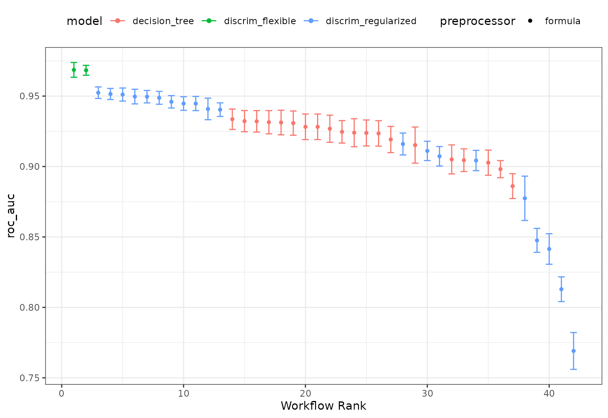

Tuning and comparing models
Source:vignettes/articles/tuning-and-comparing-models.Rmd
tuning-and-comparing-models.RmdWorkflow sets are collections of tidymodels workflow objects that are created as a set. A workflow object is a combination of a preprocessor (e.g. a formula or recipe) and a parsnip model specification.
For some problems, users might want to try different combinations of preprocessing options, models, and/or predictor sets. Instead of creating a large number of individual objects, a cohort of workflows can be created simultaneously.
In this example we’ll use a small, two-dimensional data set for illustrating classification models. The data are in the modeldata package:
library(tidymodels)
data(parabolic)
str(parabolic)
#> tibble [500 × 3] (S3: tbl_df/tbl/data.frame)
#> $ X1 : num [1:500] 3.29 1.47 1.66 1.6 2.17 ...
#> $ X2 : num [1:500] 1.661 0.414 0.791 0.276 3.166 ...
#> $ class: Factor w/ 2 levels "Class1","Class2": 1 2 2 2 1 1 2 1 2 1 ...Let’s hold back 25% of the data for a test set:
set.seed(1)
split <- initial_split(parabolic)
train_set <- training(split)
test_set <- testing(split)Visually, we can see that the predictors are mildly correlated and some type of nonlinear class boundary is probably needed.
ggplot(train_set, aes(x = X1, y = X2, col = class)) +
geom_point(alpha = 0.5) +
coord_fixed(ratio = 1) +
scale_color_brewer(palette = "Dark2")
Defining the models
We’ll fit two types of discriminant analysis (DA) models (regularized DA and flexible DA using MARS, multivariate adaptive regression splines) as well as a simple classification tree. Let’s create those parsnip model objects:
library(discrim)
mars_disc_spec <-
discrim_flexible(prod_degree = tune()) %>%
set_engine("earth")
reg_disc_sepc <-
discrim_regularized(frac_common_cov = tune(), frac_identity = tune()) %>%
set_engine("klaR")
cart_spec <-
decision_tree(cost_complexity = tune(), min_n = tune()) %>%
set_engine("rpart") %>%
set_mode("classification")Next, we’ll need a resampling method. Let’s use the bootstrap:
set.seed(2)
train_resamples <- bootstraps(train_set)We have a simple data set so a basic formula will suffice for our preprocessing. (If we needed more complex feature engineering, we could use a recipe as a preprocessor instead.)
The workflow set takes a named list of preprocessors and a named list of parsnip model specifications, and can cross them to find all combinations. For our case, it will just make a set of workflows for our models:
all_workflows <-
workflow_set(
preproc = list("formula" = class ~ .),
models = list(regularized = reg_disc_sepc, mars = mars_disc_spec, cart = cart_spec)
)
all_workflows
#> # A workflow set/tibble: 3 × 4
#> wflow_id info option result
#> <chr> <list> <list> <list>
#> 1 formula_regularized <tibble [1 × 4]> <opts[0]> <list [0]>
#> 2 formula_mars <tibble [1 × 4]> <opts[0]> <list [0]>
#> 3 formula_cart <tibble [1 × 4]> <opts[0]> <list [0]>Adding options to the models
We can add any specific options that we think are important for tuning or resampling using the option_add() function.
For illustration, let’s use the extract argument of the control function to save the fitted workflow. We can then pick which workflow should use this option with the id argument:
all_workflows <-
all_workflows %>%
option_add(id = "formula_cart",
control = control_grid(extract = function(x) x))
all_workflows
#> # A workflow set/tibble: 3 × 4
#> wflow_id info option result
#> <chr> <list> <list> <list>
#> 1 formula_regularized <tibble [1 × 4]> <opts[0]> <list [0]>
#> 2 formula_mars <tibble [1 × 4]> <opts[0]> <list [0]>
#> 3 formula_cart <tibble [1 × 4]> <opts[1]> <list [0]>Keep in mind that this will save the fitted workflow for each resample and each tuning parameter combination that we evaluate.
Tuning the models
Since these models all have tuning parameters, we can apply the workflow_map() function to execute grid search for each of these model-specific arguments. The default function to apply across the workflows is tune_grid() but other tune_*() functions and fit_resamples() can be used by passing the function name as the first argument.
Let’s use the same grid size for each model. For the MARS model, there are only two possible tuning parameter values but tune_grid() is forgiving about our request of 20 parameter values.
The verbose option provides a concise listing for which workflow is being processed:
all_workflows <-
all_workflows %>%
# Specifying arguments here adds to any previously set with `option_add()`:
workflow_map(resamples = train_resamples, grid = 20, verbose = TRUE)
#> i 1 of 3 tuning: formula_regularized
#> ✔ 1 of 3 tuning: formula_regularized (2m 9.2s)
#> i 2 of 3 tuning: formula_mars
#> ✔ 2 of 3 tuning: formula_mars (13s)
#> i 3 of 3 tuning: formula_cart
#> ✔ 3 of 3 tuning: formula_cart (1m 55.3s)
all_workflows
#> # A workflow set/tibble: 3 × 4
#> wflow_id info option result
#> <chr> <list> <list> <list>
#> 1 formula_regularized <tibble [1 × 4]> <opts[2]> <tune[+]>
#> 2 formula_mars <tibble [1 × 4]> <opts[2]> <tune[+]>
#> 3 formula_cart <tibble [1 × 4]> <opts[3]> <tune[+]>The result column now has the results of each tune_grid() call.
From these results, we can get quick assessments of how well these models classified the data:
rank_results(all_workflows, rank_metric = "roc_auc")
#> # A tibble: 84 × 9
#> wflow_id .config .metric mean std_err n preprocessor model rank
#> <chr> <chr> <chr> <dbl> <dbl> <int> <chr> <chr> <int>
#> 1 formula_m… Prepro… accura… 0.911 0.00407 25 formula disc… 1
#> 2 formula_m… Prepro… roc_auc 0.969 0.00319 25 formula disc… 1
#> 3 formula_m… Prepro… accura… 0.904 0.00388 25 formula disc… 2
#> 4 formula_m… Prepro… roc_auc 0.968 0.00213 25 formula disc… 2
#> 5 formula_r… Prepro… accura… 0.872 0.00547 25 formula disc… 3
#> 6 formula_r… Prepro… roc_auc 0.952 0.00293 25 formula disc… 3
#> 7 formula_r… Prepro… accura… 0.858 0.00564 25 formula disc… 4
#> 8 formula_r… Prepro… roc_auc 0.951 0.00253 25 formula disc… 4
#> 9 formula_r… Prepro… accura… 0.837 0.00712 25 formula disc… 5
#> 10 formula_r… Prepro… roc_auc 0.951 0.00290 25 formula disc… 5
#> # … with 74 more rows
# or a handy plot:
autoplot(all_workflows, metric = "roc_auc")
Examining specific model results
It looks like the MARS model did well. We can plot its results and also pull out the tuning object too:
autoplot(all_workflows, metric = "roc_auc", id = "formula_mars")
Not much of a difference in performance; it may be prudent to use the additive model (via prod_degree = 1).
We can also pull out the results of tune_grid() for this model:
mars_results <-
all_workflows %>%
extract_workflow_set_result("formula_mars")
mars_results
#> # Tuning results
#> # Bootstrap sampling
#> # A tibble: 25 × 4
#> splits id .metrics .notes
#> <list> <chr> <list> <list>
#> 1 <split [375/134]> Bootstrap01 <tibble [4 × 5]> <tibble [0 × 3]>
#> 2 <split [375/132]> Bootstrap02 <tibble [4 × 5]> <tibble [0 × 3]>
#> 3 <split [375/142]> Bootstrap03 <tibble [4 × 5]> <tibble [0 × 3]>
#> 4 <split [375/146]> Bootstrap04 <tibble [4 × 5]> <tibble [0 × 3]>
#> 5 <split [375/135]> Bootstrap05 <tibble [4 × 5]> <tibble [0 × 3]>
#> 6 <split [375/131]> Bootstrap06 <tibble [4 × 5]> <tibble [0 × 3]>
#> 7 <split [375/139]> Bootstrap07 <tibble [4 × 5]> <tibble [0 × 3]>
#> 8 <split [375/136]> Bootstrap08 <tibble [4 × 5]> <tibble [0 × 3]>
#> 9 <split [375/137]> Bootstrap09 <tibble [4 × 5]> <tibble [0 × 3]>
#> 10 <split [375/139]> Bootstrap10 <tibble [4 × 5]> <tibble [0 × 3]>
#> # … with 15 more rowsLet’s get that workflow object and finalize the model:
mars_workflow <-
all_workflows %>%
extract_workflow("formula_mars")
mars_workflow
#> ══ Workflow ══════════════════════════════════════════════════════════════
#> Preprocessor: Formula
#> Model: discrim_flexible()
#>
#> ── Preprocessor ──────────────────────────────────────────────────────────
#> class ~ .
#>
#> ── Model ─────────────────────────────────────────────────────────────────
#> Flexible Discriminant Model Specification (classification)
#>
#> Main Arguments:
#> prod_degree = tune()
#>
#> Computational engine: earth
mars_workflow_fit <-
mars_workflow %>%
finalize_workflow(tibble(prod_degree = 1)) %>%
fit(data = train_set)
mars_workflow_fit
#> ══ Workflow [trained] ════════════════════════════════════════════════════
#> Preprocessor: Formula
#> Model: discrim_flexible()
#>
#> ── Preprocessor ──────────────────────────────────────────────────────────
#> class ~ .
#>
#> ── Model ─────────────────────────────────────────────────────────────────
#> Call:
#> mda::fda(formula = ..y ~ ., data = data, method = earth::earth,
#> degree = ~1)
#>
#> Dimension: 1
#>
#> Percent Between-Group Variance Explained:
#> v1
#> 100
#>
#> Training Misclassification Error: 0.08533 ( N = 375 )Let’s see how well these data work on the test set:
# Make a grid to predict the whole space:
grid <-
crossing(X1 = seq(min(train_set$X1), max(train_set$X1), length.out = 250),
X2 = seq(min(train_set$X1), max(train_set$X2), length.out = 250))
grid <-
grid %>%
bind_cols(predict(mars_workflow_fit, grid, type = "prob"))We can produce a contour plot for the class boundary, then overlay the data:
ggplot(grid, aes(x = X1, y = X2)) +
geom_contour(aes(z = .pred_Class2), breaks = 0.5, col = "black") +
geom_point(data = test_set, aes(col = class), alpha = 0.5) +
coord_fixed(ratio = 1)+
scale_color_brewer(palette = "Dark2")
The workflow set allows us to screen many models to find one that does very well. This can be combined with parallel processing and, especially, racing methods from the finetune package to optimize efficiency.
Extracting information from the results
Recall that we added an option to the CART model to extract the model results. Let’s pull out the CART tuning results and see what we have:
cart_res <-
all_workflows %>%
extract_workflow_set_result("formula_cart")
cart_res
#> # Tuning results
#> # Bootstrap sampling
#> # A tibble: 25 × 5
#> splits id .metrics .notes .extracts
#> <list> <chr> <list> <list> <list>
#> 1 <split [375/134]> Bootstrap01 <tibble [40 × 6]> <tibble> <tibble>
#> 2 <split [375/132]> Bootstrap02 <tibble [40 × 6]> <tibble> <tibble>
#> 3 <split [375/142]> Bootstrap03 <tibble [40 × 6]> <tibble> <tibble>
#> 4 <split [375/146]> Bootstrap04 <tibble [40 × 6]> <tibble> <tibble>
#> 5 <split [375/135]> Bootstrap05 <tibble [40 × 6]> <tibble> <tibble>
#> 6 <split [375/131]> Bootstrap06 <tibble [40 × 6]> <tibble> <tibble>
#> 7 <split [375/139]> Bootstrap07 <tibble [40 × 6]> <tibble> <tibble>
#> 8 <split [375/136]> Bootstrap08 <tibble [40 × 6]> <tibble> <tibble>
#> 9 <split [375/137]> Bootstrap09 <tibble [40 × 6]> <tibble> <tibble>
#> 10 <split [375/139]> Bootstrap10 <tibble [40 × 6]> <tibble> <tibble>
#> # … with 15 more rowsThe .extracts has 20 rows for each resample (since there were 20 tuning parameter candidates). Each tibble in that column has a fitted workflow for each candidate and, since cart_res has 25 rows, a value returned for each resample. That’s 500 fitted workflows.
Let’s slim that down by keeping the ones that correspond to the best tuning parameters:
# Get the best results
best_cart <- select_best(cart_res, metric = "roc_auc")
cart_wflows <-
cart_res %>%
select(id, .extracts) %>%
unnest(cols = .extracts) %>%
inner_join(best_cart)
#> Joining, by = c("cost_complexity", "min_n", ".config")
cart_wflows
#> # A tibble: 25 × 5
#> id cost_complexity min_n .extracts .config
#> <chr> <dbl> <int> <list> <chr>
#> 1 Bootstrap01 0.00000000598 20 <workflow> Preprocessor1_Model02
#> 2 Bootstrap02 0.00000000598 20 <workflow> Preprocessor1_Model02
#> 3 Bootstrap03 0.00000000598 20 <workflow> Preprocessor1_Model02
#> 4 Bootstrap04 0.00000000598 20 <workflow> Preprocessor1_Model02
#> 5 Bootstrap05 0.00000000598 20 <workflow> Preprocessor1_Model02
#> 6 Bootstrap06 0.00000000598 20 <workflow> Preprocessor1_Model02
#> 7 Bootstrap07 0.00000000598 20 <workflow> Preprocessor1_Model02
#> 8 Bootstrap08 0.00000000598 20 <workflow> Preprocessor1_Model02
#> 9 Bootstrap09 0.00000000598 20 <workflow> Preprocessor1_Model02
#> 10 Bootstrap10 0.00000000598 20 <workflow> Preprocessor1_Model02
#> # … with 15 more rowsWhat can we do with these? Let’s write a function to return the number of terminal nodes in the tree.
num_nodes <- function(wflow) {
var_imps <-
wflow %>%
# Pull out the rpart model
extract_fit_engine() %>%
# The 'frame' element is a matrix with a column that
# indicates which leaves are terminal
pluck("frame") %>%
# Convert to a data frame
as_tibble() %>%
# Save only the rows that are terminal nodes
filter(var == "<leaf>") %>%
# Count them
nrow()
}
cart_wflows$.extracts[[1]] %>% num_nodes()Now let’s create a column with the results for each resample:
cart_wflows <-
cart_wflows %>%
mutate(num_nodes = map_int(.extracts, num_nodes))
cart_wflows
#> # A tibble: 25 × 6
#> id cost_complexity min_n .extracts .config num_nodes
#> <chr> <dbl> <int> <list> <chr> <int>
#> 1 Bootstrap01 0.00000000598 20 <workflow> Preprocessor1_M… 9
#> 2 Bootstrap02 0.00000000598 20 <workflow> Preprocessor1_M… 9
#> 3 Bootstrap03 0.00000000598 20 <workflow> Preprocessor1_M… 5
#> 4 Bootstrap04 0.00000000598 20 <workflow> Preprocessor1_M… 6
#> 5 Bootstrap05 0.00000000598 20 <workflow> Preprocessor1_M… 10
#> 6 Bootstrap06 0.00000000598 20 <workflow> Preprocessor1_M… 6
#> 7 Bootstrap07 0.00000000598 20 <workflow> Preprocessor1_M… 7
#> 8 Bootstrap08 0.00000000598 20 <workflow> Preprocessor1_M… 3
#> 9 Bootstrap09 0.00000000598 20 <workflow> Preprocessor1_M… 8
#> 10 Bootstrap10 0.00000000598 20 <workflow> Preprocessor1_M… 5
#> # … with 15 more rowsThe average number of terminal nodes for this model is 6.6 nodes.